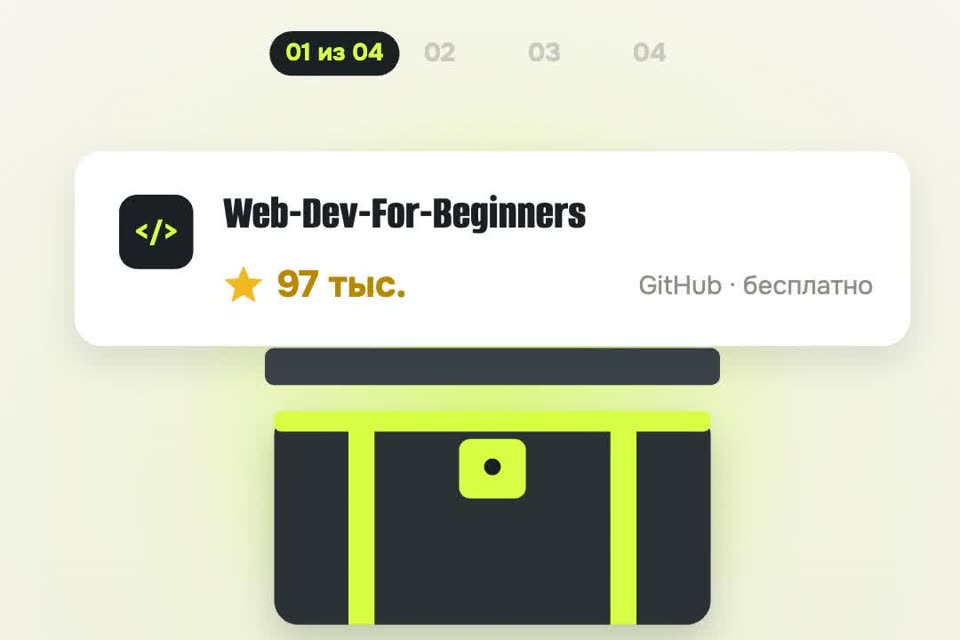

Фронтенд бесплатно: маршрут по 4 репозиториям
Обещанный маршрут из ролика. Четыре ресурса с GitHub в том порядке, в котором их удобно проходить, и что делать каждую неделю без куратора.
- бесплатно
- есть русский перевод
- недельные нормы
К ролику «Профессию продают за 170 тысяч — на гитхабе даром» · обновлено 28 октября 2026

Нужны браузер, редактор кода (бесплатный VS Code) и 5–7 часов в неделю. Куратора не будет: напоминать себе придётся самому, поэтому в каждом шаге есть недельная норма.
Маршрут за 4 шага
Пройдите курс Microsoft по веб-разработке
База: HTML, CSS, JavaScript и пять проектов руками.
github.com/microsoft/Web-Dev-For-Beginners · около 97 тысяч звёзд · лицензия MIT.
- 12 недель, 24 урока. У каждого урока тест до и после, задание и разбор.
- Проекты: террариум, игра на скорость печати, расширение для браузера, космическая игра, банковское приложение.
- Русский перевод всех уроков: translations/ru. Перевод машинный (сделан инструментом co-op-translator), местами коряво; если непонятно, сверяйтесь с английским.
Скачать к себе, чтобы запускать проекты локально:
git clone --depth 1 https://github.com/microsoft/Web-Dev-For-Beginners.gitНорма: 2 урока в неделю. Через 12 недель у вас пять своих проектов в браузере и понятная база, с которой можно идти дальше.
Параллельно читайте You Don't Know JS
Как JavaScript устроен внутри: область видимости, замыкания, this, асинхронность.
github.com/getify/You-Dont-Know-JS · около 185 тысяч звёзд.
- Первое издание — шесть книг, которые O'Reilly выпускало в 2014–2015 годах. По словам автора, тиража больше нет, купить их нельзя, а читать на GitHub можно бесплатно.
- Второе издание («You Don't Know JS Yet») автор выпускает сам; его тоже можно читать в репозитории бесплатно, а купить — в магазинах.
- Книги на английском. Если с английским тяжело, вместо них берите русский учебник learn.javascript.ru (исходники: javascript-tutorial/ru.javascript.info).
Норма: одна глава в неделю, начиная с «Up & Going» и «Scope & Closures». Когда в курсе Microsoft что-то работает «магически», здесь объяснение почему.
Получите сертификаты freeCodeCamp
Проекты с проверкой и экзамен — то, за что на платных курсах берут деньги.
github.com/freeCodeCamp/freeCodeCamp · около 458 тысяч звёзд · проходить на freecodecamp.org/learn.
- Для фронтенда три сертификата по порядку: Responsive Web Design, JavaScript, Front-End Development Libraries.
- В каждом: интерактивные уроки, практика, тесты, 5 обязательных проектов и экзамен. Сертификат бесплатный, на него можно дать ссылку в резюме.
- Чтобы сохранять прогресс и получить сертификат, нужен бесплатный аккаунт на сайте freeCodeCamp. Задания на английском.
Начинайте после 8–10 урока курса Microsoft. Норма: 5–7 часов в неделю. Первый сертификат — ваш первый проверенный результат для резюме.
Сверьтесь с картой фронтенда
Что вы уже знаете и что учить дальше.
roadmap.sh/frontend · репозиторий developer-roadmap (GitHub перенаправляет его на nilbuild/developer-roadmap) · около 370 тысяч звёзд на все карты сайта.
- Карта показывает темы по порядку: интернет, HTML, CSS, JavaScript, Git, фреймворк, тесты и дальше.
- Раз в месяц открывайте карту и отмечайте для себя, что уже прошли. Следующей берите ближайшую непройденную тему.
- Для новичков на сайте есть упрощённая версия: Frontend Beginner Roadmap.
Список из трёх-пяти тем, которых не хватает именно вам. Обычно после шагов 1–3 это Git, один фреймворк (чаще React) и тесты.
Откуда цифры в ролике
170 тысяч за профессиюSkillbox, 28 октября 2026
Страница «Профессия Фронтенд-разработчик + ИИ» 28.10.2026: базовый тариф 5 036 ₽ в месяц со скидкой 45 % (без скидки 9 157 ₽), рассрочка на 34 месяца, 9 месяцев обучения. 5 036 × 34 = 171 224 ₽. На той же странице в другом блоке рассрочка указана на 36 месяцев; дороже тарифы «Оптимальный» и «Максимальный». Цены у школ меняются почти каждый день.
Звёзды репозиториевGitHub API, 28 октября 2026
- microsoft/Web-Dev-For-Beginners — 97 026
- getify/You-Dont-Know-JS — 184 828
- freeCodeCamp/freeCodeCamp — 458 076
- developer-roadmap — 370 588
Если застряли
Бросил на третьей неделе
Так бывает чаще всего, и куратор здесь не поможет. Вернитесь к последнему уроку, который делали руками, и сделайте его проект ещё раз. Меньше нормы лучше, чем ноль: один урок в неделю — тоже темп.
Тяжело на английском
Курс Microsoft есть на русском (шаг 1), вместо книг You Don't Know JS — learn.javascript.ru (шаг 2). freeCodeCamp — на английском, но задания короткие, а переводчик в браузере справляется.
Код не работает, а спросить некого
Вставьте код и текст ошибки в любой чат-бот и попросите объяснить, что не так, но не переписывать за вас. У freeCodeCamp есть форум, где отвечают на вопросы по их заданиям.
Чего это не гарантирует
- Работы. Её не гарантирует и платный курс; у бесплатных ресурсов нет карьерного центра и помощи с резюме.
- Проверки кода живым человеком. Тесты и проекты freeCodeCamp проверяются автоматически.
- Дедлайнов и напоминаний. Это главный минус, ради которого люди и платят.
- Звёзды на GitHub — это популярность, а не оценка качества обучения.